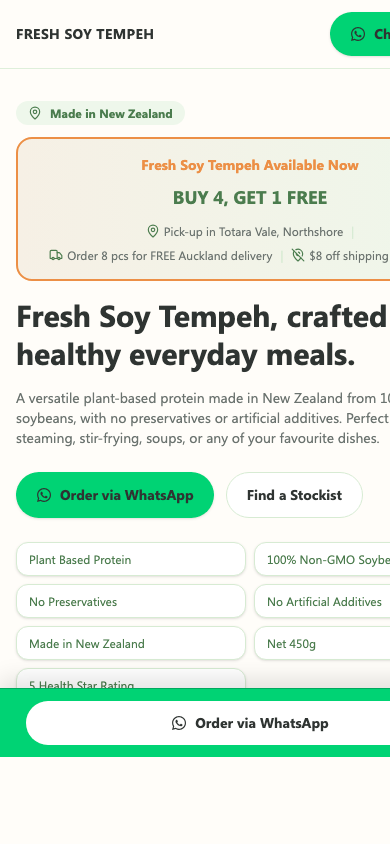

Growth & Acquisition
Digital marketing since 2016.
Helped several Indonesian SMEs improve digital presence and marketing execution through Facebook Ads, SEM, and Google SEO.
Auckland based - available remote
I design and build clean, responsive websites with the judgement of someone who has worked across digital marketing, hospitality operations, healthcare support, and AI-assisted workflows.
Fresh Soy Tempeh Product landing page


Why the work is different
The portfolio is design-first, but the judgement behind it comes from acquisition work, service operations, care environments, and AI-assisted execution.
Growth & Acquisition
Helped several Indonesian SMEs improve digital presence and marketing execution through Facebook Ads, SEM, and Google SEO.
Hospitality Discipline
Former F&B Head Steward at AIDA Cruises, with high-volume guest service, POS exposure, HACCP discipline, and restaurant management experience.
Healthcare Empathy
200+ clinical hours in aged care, person-centred support, documentation, cultural safety, and calm communication in sensitive environments.
AI Workflow
Uses AI-assisted planning, prototyping, copy iteration, knowledge synthesis, and QA while keeping final outputs grounded in verified content.
Selected work
Projects are presented with the problem, solution, output, and business impact so clients and hiring teams can evaluate the work quickly.
Real work
A product landing page built for ordering intent, trust building, stockist discovery, and campaign tracking.

Real work
A Malaysian restaurant website experience with menu paths, reservations, takeaway, location, and atmosphere.

Real work
A hospitality rebuild focused on waterfront storytelling, visit planning, menu discovery, and accessibility.
Workflow
I combine clear page strategy, fast prototyping, growth-aware content, and documented handoff so remote collaborators can review decisions without long meetings.
Define audience, conversion path, search intent, proof points, and what must be understood in 30 seconds.
Build responsive static pages and interactive mockups that show the actual customer experience.
Turn decisions into semantic case studies with problem, solution, output, and impact.
Keep the stack simple, fast, accessible, and easy to update after launch.